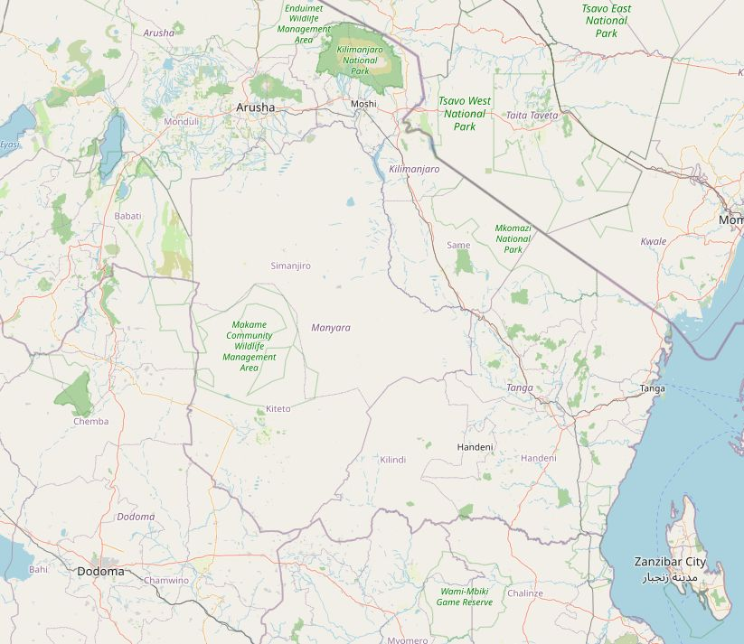
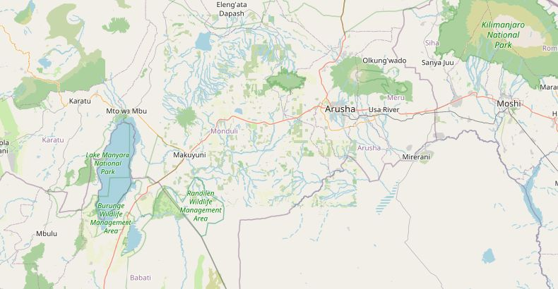
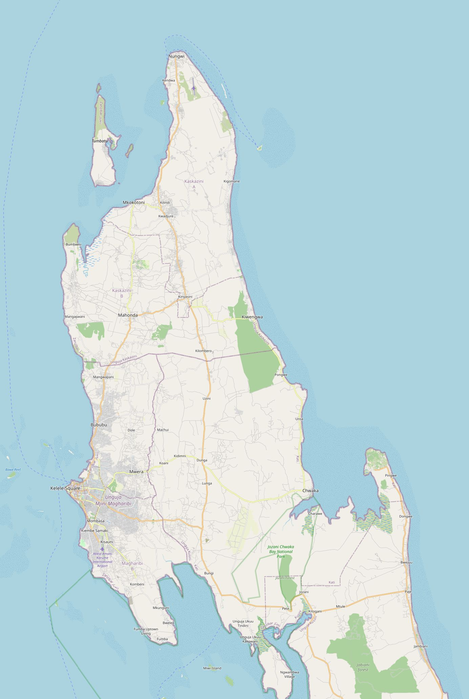
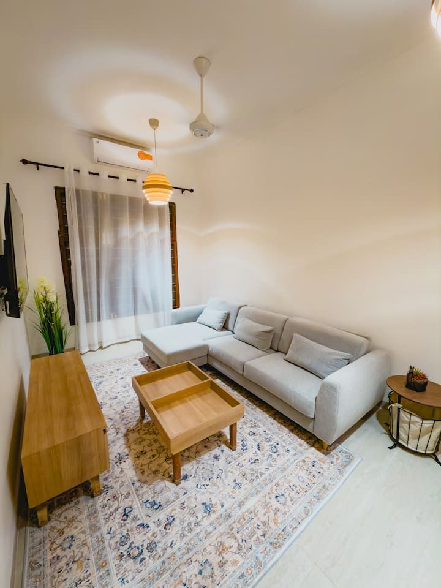
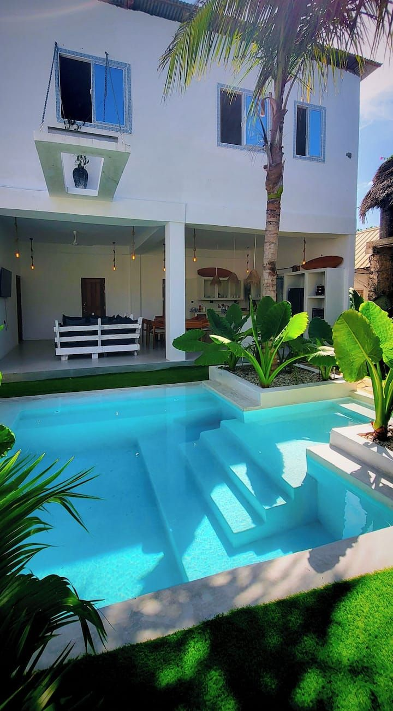
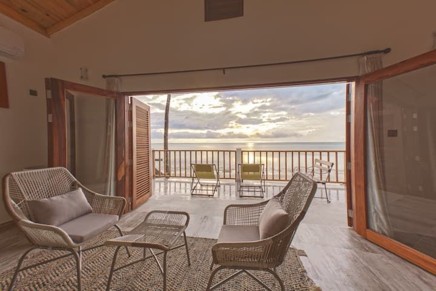
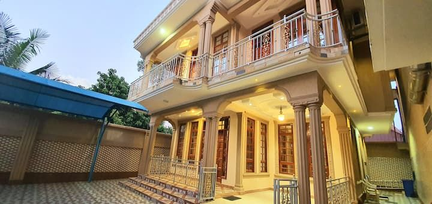
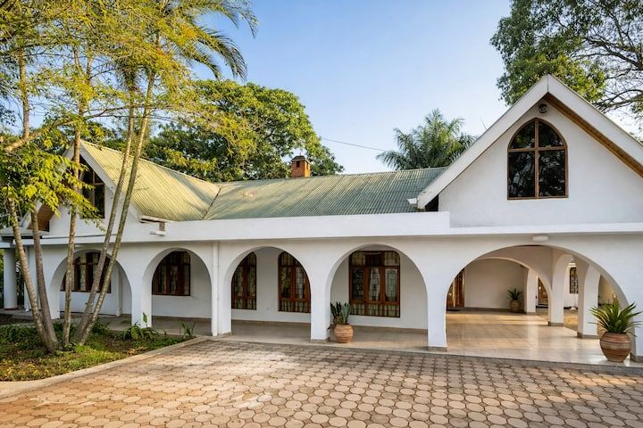
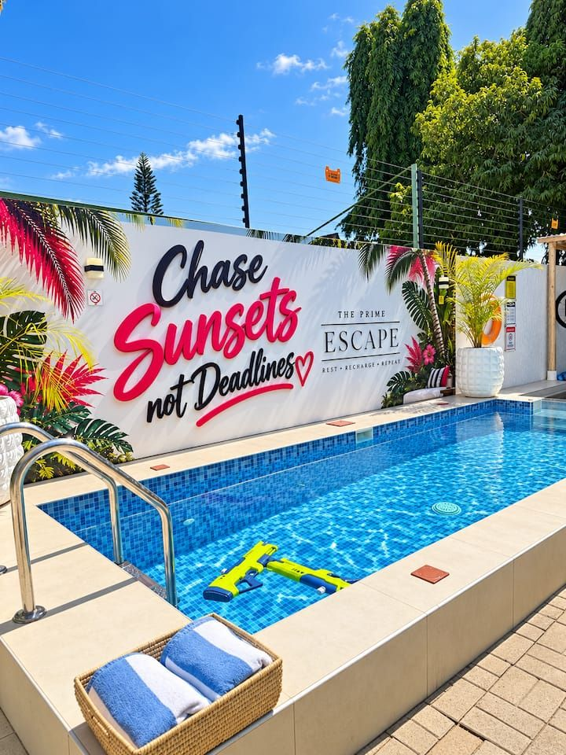

Resumen
Ruta
Quito → Bogotá → Madrid → Doha → Kilimanjaro → Arusha → Tarangire → Ngorongoro → lago Manyara → Arusha → (vuelo nocturno) Zanzíbar → Madrid → Quito.
Mapas de la ruta

123456- 1 Aeropuerto Kilimanjaro (JRO)
- 2 Arusha
- 3 Parque Tarangire
- 4 Cráter del Ngorongoro
- 5 Lago Manyara
- 6 Zanzíbar

123456- 1 Aeropuerto Kilimanjaro (JRO)
- 2 Arusha (base antes y después del safari)
- 3 Cascadas, termas y finca de café (zona de Moshi)
- 4 Parque Nacional Tarangire
- 5 Parque Nacional Lago Manyara
- 6 Cráter del Ngorongoro

12345678- 1 Aeropuerto de Zanzíbar (ZNZ)
- 2 Stone Town y casco antiguo
- 3 Isla Changuu (Prison Island)
- 4 Bosque Jozani
- 5 Paje
- 6 Jambiani
- 7 Nungwi (atardecer en barco)
- 8 Atolón Mnemba (snorkel)
Mapa base © colaboradores de OpenStreetMap. Las posiciones de los lugares son aproximadas. Los alojamientos de Airbnb no se marcan porque Airbnb no muestra su ubicación exacta antes de reservar.
Costos
Los montos de la propuesta no declaran moneda ni si son por persona o por grupo. Se asume USD por persona.
Líneas de la propuesta propuesta
| Concepto | Costo | Costo + |
|---|---|---|
| Vuelo ida y vuelta Quito - Madrid | $1.064 | $1.196 |
| Vuelo ida Madrid - Kilimanjaro | $625 | $675 |
| Vuelo Kilimanjaro - Zanzibar | $141 | $160 |
| Vuelo regreso Zanzíbar - Madrid | $598 | $650 |
| Safari 3 días desde Arusha: Tarangire, Ngorongoro, Manyara (hospedaje, 3 comidas y movilización) | $870 | $870 |
| Tour cascadas, termas naturales y finca cafetera | $90 | $90 |
| Zanzíbar: actividades 3 días | $150 | $200 |
| Comidas no incluidas en tours (cenas/almuerzos) | $100 | $200 |
| Hospedaje Arusha 2 noches (antes y después del safari) | $60 | $150 |
| Hospedaje Zanzíbar 3 noches all inclusive | $239 | $250 |
| Suma de las líneas | $3.937 | $4.441 |
| Total presentado en la propuesta | $3.877 | $4.441 |
La columna Costo suma $3.937 y la propuesta presenta $3.877: faltan $60. La columna Costo + sí coincide.
Cómo se llega al total esperado auditoría
| Base recalculada (suma de las líneas) | $3.937 |
| Seguro de 13 días (cubre el obligatorio de entrada de $44) a $5 por día | +$65 |
| Equipaje facturado (vuelos largos y vuelo interno) | +$100 |
| eSIM | +$20 |
| Subtotal | $4.122 |
| Contingencia 10% | +$412 |
| Total esperado por persona | $4.534 |
El escenario alto suma además las tasas de parques si el precio del safari no las incluye (estimado en $320 por persona, aunque el precio de mercado comparable de $711 sugiere que sí las incluye) y sube vuelos, hospedaje y comidas.
Partidas que la propuesta no presupuesta
| Concepto | USD | Unidad | Estado |
|---|---|---|---|
| Entrada Tarangire (TANAPA), adulto no residente, por 24 h | $59 | persona por 24 h | referencia |
| Entrada Lago Manyara (TANAPA), adulto no residente, por 24 h | $59 | persona por 24 h | referencia |
| Entrada Area de Conservacion Ngorongoro (NCAA), adulto no residente, por 24 h | $70.8 | persona por 24 h | oficial |
| Tasa de servicio de crater de Ngorongoro (descenso) | $295 | vehiculo | oficial |
| Tarifa de concesion (dormir en lodge/campamento fijo dentro de NCAA) | $59 | persona por noche | oficial |
| Tarifa de concesion en parques TANAPA (alojamiento en Tarangire) | — | persona por noche | no encontrado |
| Estimacion propia: tasas de parque que podrian NO estar en los USD 870 del safari | — | persona | estimado |
| Visa eVisa Tanzania | $50 | persona | oficial |
| Seguro obligatorio de entrada (ZIC/NIC) | $44 | persona | referencia |
| Tasas de aeropuerto y de seguridad (JRO, ZNZ, Doha, Madrid) | — | persona | no encontrado |
Fuentes y fechas en la sección Pendiente. Las tasas de parques son de operadores turísticos y no de la autoridad oficial.
Contraste de precios referencia 2026
| Ítem | Propuesta | Referencia | Diferencia |
|---|---|---|---|
| Vuelo ida y vuelta Quito-Madrid | $1.064 | $925 | 15% |
| Vuelo Madrid-Kilimanjaro (ida) | $625 | $626 | 0% |
| Vuelo Kilimanjaro-Zanzibar | $141 | $84 | 68% |
| Vuelo Zanzibar-Madrid | $598 | — | — |
| Safari 3 dias desde Arusha (Tarangire, Ngorongoro, Manyara; hospedaje, comidas, movilizacion) | $870 | $711 | 22% |
Son precios publicados en 2026, no cotizaciones para septiembre de 2027 ni para 6 personas.
Vota tus opciones
Elige arriba el hospedaje y el valor de las comidas, escribe tu nombre y manda tu elección al grupo.
Día por día
Horarios y precios de la propuesta, con vuelos del presupuesto en su día. "sin precio" marca lo que la propuesta no cotiza. El costo diario incluye la noche según el hospedaje elegido arriba y no reparte los $100 de comidas ni los ajustes de la auditoría.
Día 1 · sáb 11 sep · Quito → Bogotá → Madrid en tránsito
| 04:45 | Quito → Bogotá (Avianca) propuesta | |
| 06:20–13:35 | Escala en Bogotá propuesta | |
| 13:35 | Bogotá → Madrid, llegada el domingo 12 sep a las 06:10 propuesta | |
| Vuelos Quito–Madrid ida y vuelta y Madrid–Kilimanjaro ida vuelo | $1.689 |
Costo del día por persona:
Día 2 · dom 12 sep · Madrid → Doha en tránsito
| 06:10–15:45 | Escala larga con paseo por Madrid propuesta | |
| 15:45 | Madrid → Doha (Qatar), llegada 23:30 propuesta | |
| 23:30 | Paseo nocturno, cena y hotel en Doha propuesta | |
| Hotel de Doha: no tiene precio en la propuesta sin precio |
Costo del día por persona:
Día 3 · lun 13 sep · Doha → Kilimanjaro → Arusha en tránsito
| 06:20 u 08:20 | Doha → Kilimanjaro (la propuesta da las dos horas) propuesta | |
| 16:25 | Llegada a Kilimanjaro y traslado a Arusha (sin precio) propuesta | |
| Cena y descanso en Arusha propuesta | ||
| Noche: |
Costo del día por persona:
Día 4 · mar 14 sep · Arusha → Parque Tarangire en tránsito
| Salida de Arusha al Parque Nacional Tarangire: safari con hospedaje en el parque y comidas propuesta | $290 |
Costo del día por persona:
Día 5 · mié 15 sep · Ngorongoro en tránsito
| mañana | Safari y visita al cráter del Ngorongoro; hospedaje en el parque y comidas propuesta | $290 |
Costo del día por persona:
Día 6 · jue 16 sep · Lago Manyara → Arusha en tránsito
| Safari en el lago Manyara, grupo reducido, comidas incluidas propuesta | $290 | |
| Regreso a Arusha (noche deducida de la propuesta) propuesta | ||
| Noche: |
Costo del día por persona:
Día 7 · vie 17 sep · Cascadas, finca de café y vuelo a Zanzíbar en tránsito
| Cascadas, termas naturales y degustación en finca de café propuesta | $90 | |
| Vuelo Kilimanjaro → Zanzíbar (nocturno; sin aerolínea ni horario) vuelo | $141 | |
| Cena en el pueblo y descanso propuesta | ||
| Noche: |
Costo del día por persona:
Día 8 · sáb 18 sep · Playa y atardecer en barco en tránsito
| Playa y relax propuesta | ||
| atardecer | Tour en barco con cena a bordo propuesta | $50 |
| Noche: |
Costo del día por persona:
Día 9 · dom 19 sep · Playas y tortugas, o Mnemba en tránsito
| Playas y santuario de tortugas con almuerzo, o excursión a Mnemba con snorkel (las láminas se contradicen) propuesta | $50 | |
| noche | Paseo nocturno por el pueblo propuesta | |
| Noche: |
Costo del día por persona:
Día 10 · lun 20 sep · Stone Town y especias en tránsito
| Stone Town, degustación de especias y casco antiguo propuesta | $50 | |
| noche | Cena en The Rock propuesta | |
| Noche: |
Costo del día por persona:
Día 11 · mar 21 sep · Zanzíbar → Madrid en tránsito
| mañana | Playa, check-out y almuerzo propuesta | |
| 15:50 | Zanzíbar → Madrid (aerolínea y escalas sin indicar) vuelo | $598 |
Costo del día por persona:
Día 12 · mié 22 sep · Madrid en tránsito
| 08:10 | Llegada a Madrid; día libre (opción de Barcelona sin precio) propuesta | |
| Hotel de Madrid: no tiene precio en la propuesta sin precio |
Costo del día por persona:
Día 13 · jue 23 sep · Madrid → Quito en tránsito
| 11:05 | Madrid → Quito, llegada a las 17:40 (aerolínea y escalas sin indicar) propuesta |
Costo del día por persona:
Vuelos y tiempos
| Tramo | Fecha | Aerolínea | Escalas |
|---|---|---|---|
| Quito → Bogotá | sáb 11-sep | Avianca | Salida 4h45; escala en Bogotá 6h20-13h35 |
| Bogotá → Madrid | 11-sep / llegada dom 12-sep | Avianca | Llegada Madrid 6h10; escala Madrid 6h10-13h30 (d.2) o salida 15h45 (d.2 y d.7) |
| Madrid → Doha | dom 12-sep | Qatar Airways | Salida 15h45, llegada 23h30; escala Doha con hospedaje de una noche |
| Doha → Kilimanjaro | lun 13-sep | Qatar Airways | Salida 8h20 (d.2) o 6h20 (d.7); llegada 16h25 |
| Kilimanjaro → Zanzíbar | 17-sep (vuelo nocturno) | sin indicar | |
| Zanzíbar → Madrid | 21-sep / llegada 22-sep | sin indicar | Salida 15h50, llegada 8h10; escalas no indicadas |
| Madrid → Quito | 23-sep | sin indicar | Salida 11h05, llegada 17h40 hora local; escalas no indicadas |
Opciones de ruta y conexiones referencia
Consultado el 13 nov 2026 en agregadores públicos de rutas (no en vivo: las herramientas de búsqueda de vuelos no están disponibles desde Ecuador). Las duraciones son de vuelo, sin traslados al aeropuerto, y los horarios y frecuencias varían entre fuentes y por temporada. No hay precios.
| Opción de ida | Tramos | Tiempo aprox. | A favor | En contra |
|---|---|---|---|---|
| A. Propuesta | Quito–Bogotá–Madrid–Doha–Kilimanjaro, boletos separados | ~52 h puerta a puerta | Ya está armada, con paseo en Madrid y noche en Doha | ~29 h de espera en escalas; sin protección si falla una conexión; hotel de Doha sin costo |
| B. KLM por Ámsterdam | Quito–Ámsterdam (directo, ~12 h) · Ámsterdam–Kilimanjaro (directo, ~8 h 25) | ~21 h de vuelo + escala | Un solo boleto, solo 2 vuelos, sin noche de hotel | Quito–Ámsterdam tiene entre 1 y 6 vuelos por semana según la fuente; falta confirmar los días |
| C. Madrid y Estambul | Quito–Madrid (Iberia o Air Europa, directo, ~10–11 h) · Madrid–Estambul · Estambul–Kilimanjaro (Turkish, directo, ~7 h 10) | ~22 h de vuelo + 2 escalas | Quito–Madrid tiene muchos vuelos (unos 12 a 18 por semana) | Estambul–Kilimanjaro tiene pocos vuelos por semana (una fuente dice miércoles, viernes y domingo) |
| D. Madrid y Doha | Quito–Madrid (directo) · Madrid–Doha · Doha–Kilimanjaro (Qatar, directo, ~5 h 30) | ~22–23 h de vuelo + 2 escalas | Doha–Kilimanjaro es frecuente (de 3 a 7 por semana según la fuente) | Es la ruta de la propuesta, pero sin las escalas largas solo si se compra en un boleto |
Lo que se ve: el tiempo de vuelo es casi igual en todas (21 a 23 horas). La diferencia está en las escalas: la propuesta pasa unas 29 horas esperando, y las opciones B, C y D con un solo boleto y conexiones normales las reducen a un día de viaje. La B es la más corta y simple.
| Opción de regreso | Qué dicen las fuentes |
|---|---|
| Zanzíbar–Estambul (Turkish) | Vuelo directo; Estambul es el único destino turco con directo desde Zanzíbar. |
| Zanzíbar–Adís Abeba (Ethiopian) | Vuelo directo. |
| Zanzíbar–Ámsterdam (KLM) | Una fuente lo da como directo de temporada y otra como conexión. Si existe en septiembre, Ámsterdam–Quito es directo (KLM). |
| Zanzíbar–Zúrich, Fráncfort | Directos de temporada (Edelweiss, Eurowings). |
| Kilimanjaro–Zanzíbar (interno) | Precision Air y Air Tanzania, de 1 h a 1 h 20 min. Una fuente lista salidas hacia las 14:40, 18:20 y 22:45; las frecuencias se contradicen. |
Dónde dormir Airbnb, consulta 13 nov 2026
Casas o departamentos completos para 6, con 3 o más habitaciones (una por pareja), buscados en Airbnb para las fechas exactas. El precio es el total que muestra Airbnb para toda la estadía; puede sumar impuestos y tarifas al reservar. Son anuncios reales de hoy, no una reserva ni disponibilidad confirmada.
Zanzíbar · 4 noches
Jue 17 al lun 21 de septiembre · en la zona: desde $512, mediana $1.184 (16 opciones de 3 o más habitaciones)



Arusha · antes del safari (13 sep) y después (16 sep)
1 noche cada vez; el precio mostrado es el mismo para las dos fechas · en la zona: desde $40, mediana $120 (14 opciones de 3 o más habitaciones)



Requisitos de entrada
No se asume ninguna nacionalidad. Cada persona debe confirmar con su pasaporte.
- Visa de Tanzania (cubre Zanzíbar): obligatoria para turistas. eVisa de entrada única, $50 según la tabla de la Embajada de Tanzania en Malasia (sin fecha de actualización). referencia Algunos pasaportes pueden estar exentos o pagar otra tarifa. Solicitar con 3 a 4 semanas de anticipación (recomendación propia).
- Pasaporte: vigencia de al menos 6 meses después de la llegada y una página en blanco. FCDO, 13 nov 2026
- Seguro de viaje de entrada, obligatorio: todos los visitantes a Tanzania continental y Zanzíbar, salvo residentes, deben tener el seguro del gobierno tanzano, aunque ya tengan uno propio. Se compra en línea o al llegar. Referencia de precio: $44. FCDO
- Fiebre amarilla: certificado exigido si se llega desde un país con riesgo de transmisión, incluidas escalas de más de 12 horas. La regla para quienes salen de Ecuador o Colombia no se pudo confirmar. FCDO / CDC
- Paludismo: el CDC recomienda profilaxis con receta para zonas por debajo de 1.800 m, que incluye Zanzíbar y gran parte del safari. Consultar a un médico de viajes.
- Tránsito por Qatar y por España: no verificado por pasaporte. Hay una noche en Doha (se sale de la zona de tránsito) y dos paradas en Madrid con salida del aeropuerto.
Seguridad
Fuentes oficiales consultadas el 13 de noviembre de 2026. Los avisos cambian: revisar de nuevo antes de reservar.
- Zanzíbar: el FCDO menciona incidentes de robo en Stone Town, en hoteles y en playas turísticas. Pide guardar pasaportes y objetos de valor, y usar las medidas de seguridad del alojamiento.
- Elecciones: las elecciones en Zanzíbar han derivado antes en violencia, y el FCDO señala un aumento de discurso contra extranjeros. Conviene revisar el aviso oficial poco antes de viajar.
- Safari: contratar solo operadores con licencia. La asociación TATO (tatotz.org) publica la lista de empresas autorizadas. No comprar safaris a intermediarios en la calle. Canadá advierte de estafas con safaris.
- Seguro: el seguro de viaje puede quedar invalidado si se viaja contra el consejo oficial. Debe cubrir safari, altitud y evacuación médica.
Vestimenta en Zanzíbar: es de mayoría musulmana. En Stone Town y aldeas se recomienda ropa modesta (hombros y rodillas cubiertos); en playas y resorts el traje de baño es normal. Las guías esperan algo más de modestia de las mujeres (no verificado en una norma oficial). Ramadán 2027 cae por calendario aproximado en febrero y marzo, no en septiembre (cálculo propio).
Clima en septiembre referencia
Final de la larga estación seca (junio a octubre): cielos despejados y poca lluvia. Arusha y Ngorongoro, unos 16 a 27 °C de día, con noches frías en altura (llevar abrigo). Zanzíbar, máximas de 30 a 31 °C, mínimas de 19 a 20 °C, mar cálido y algo más de humedad al final del mes. Es temporada alta turística: precios altos y mucha gente en Ngorongoro.
Pendiente y contradicciones
La propuesta se contradice
- Suma de la columna 'Costo': 1064+625+141+598+870+90+150+100+60+239 = 3,937; el total presentado es 3,877 (faltan 60). La columna 'Costo +' suma 4,441 y sí coincide.
- Salida Doha-Kilimanjaro: 8h20 (d.2) vs 6h20 (d.7). Además d.2 da la escala de Doha como 23h30-6h20, es decir ≤6h50 incluyendo paseo nocturno, cena y hotel.
- Escala de Madrid: d.2 dice 6h10-13h30, pero la salida de Qatar es 15h45 (d.2 y d.7); son 9h35 y no 7h20.
- Zanzíbar: se llega la noche del 17-sep y se sale el 21-sep (noches 17, 18, 19 y 20 = 4), pero el presupuesto cuenta 3 noches (d.8).
- Zanzíbar: d.5 dice 'desayuno incluido en el hotel' y d.8 dice 'All Inclusive'.
- Zanzíbar día 2 (19-sep): d.5 dice Mnemba con snorkel, barbacoa y Stonetown; d.7 dice santuario de tortugas y deja Stonetown para el 20-sep. Mnemba no aparece en d.7 y tortugas no aparece en d.5.
- Permiso: 13 días de vacaciones (11 al 23 inclusive, correcto) pero d.1 dice 11 días de permiso; con semana Lun-Vie los días laborables del rango son 9 (13-17 y 20-23). No verificable con la fuente.
- Safari: d.3 'comidas incluidas' y 'hospedaje en el parque' en días 2 y 3; la noche del 16-sep (Manyara) solo se deduce de 'Arusha antes y después del safari' en d.8.
- d.3 titula '5 días de safari y tours' y d.8 cobra '3 días de safari' + 1 tour (4 días con actividad más el día de llegada).
No está en el presupuesto
- Hospedaje de Doha (12-sep) sin costo en el presupuesto
- Hospedaje de Madrid (22-sep) sin costo
- Cuarta noche de Zanzíbar (17-sep)
- Traslados aeropuerto-hotel en Arusha, Zanzíbar y Madrid; transporte del tour de cascadas y de Zanzíbar
- Entradas a parques nacionales, cráter Ngorongoro y cascadas: no se dice si van incluidas
- Visa de Tanzania/Qatar/España, vacunas, seguro de viaje
- Equipaje (safari, Qatar, vuelo interno Kilimanjaro-Zanzíbar)
- Propinas, tasas de aeropuerto
- Costo de Barcelona (opción 22-sep) y de The Rock
- Pago y cancelación, clima
Datos que faltan
- Contenido de d.4 y d.6 ('ACTIVIDADES'): solo se extrajo el título, el contenido (probablemente imagen) falta
- Significado de las columnas 'Costo +' y 'Costo' y si los montos son por persona o para el grupo
- Moneda del símbolo '$' (se asume USD)
- Año de las fechas (no figura en la fuente)
- Hora y aerolínea de Kilimanjaro-Zanzíbar, Zanzíbar-Madrid y Madrid-Quito; escalas de estos tramos
- Nombres de hoteles, habitaciones y camas (Arusha, parques, Zanzíbar, Doha, Madrid)
- Hora real de salida Doha-Kilimanjaro (6h20 o 8h20) y de Qatar desde Madrid (15h45; d.2 dice 13h30 en el bloque de escala)
- Qué noche de safari/Arusha corresponde a cada alojamiento (16-sep) y alcance del 'hospedaje en parque'
- Visa, vacunas, seguro, equipaje, clima, pago y cancelación
- Cómo se computan los 11 días de permiso (ver inconsistencias)
Fuentes
- FCDO: Tanzania (consulta 13 nov 2026)
- Gobierno de Canadá: Tanzania (consulta 13 nov 2026)
- Tasas de parques 2026 y 2027 (operador turístico)
- Tasas de parques (operador turístico)
- Vuelos Ámsterdam–Kilimanjaro y Ámsterdam–Quito
- Referencia de precios Quito–Madrid